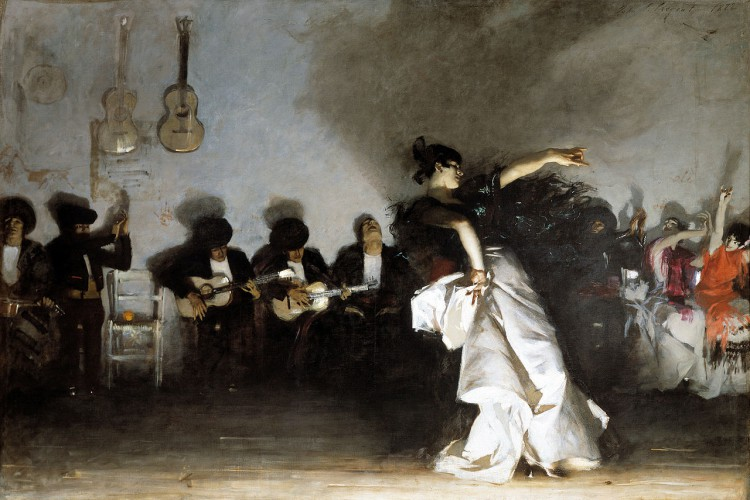
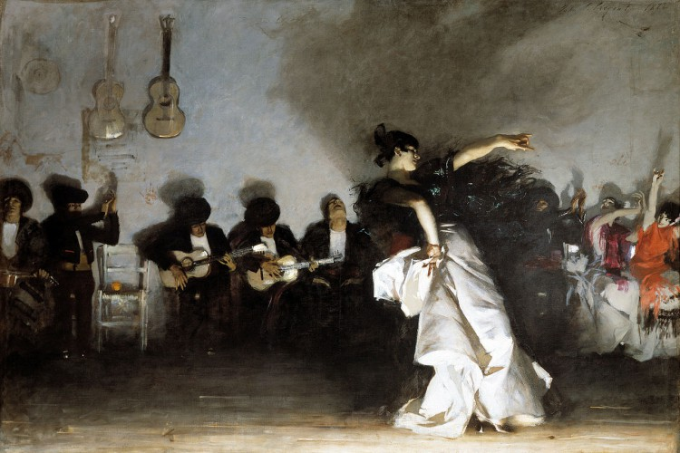

La soleá -de soledad; plural, soleares-, es el estilo flamenco considerado como centro neurálgico del arte jondo. En su estructura musical guarda buena parte de los elementos rectores (melodías, ritmos, armonías) de la estética musical propia del género flamenco, pero no por ello es la soleá el más antiguo estilo del flamenco, aunque ningún otro aire ha tenido tal capacidad de sumar valores y calidades específicas del arte jondo como las soleares.
Surge de la evolución de un género musical de enorme implantación en el XIX andaluz, un estilo que conjuga rítmo y compás, con cadencias melódicas sentimentales y un soporte literario conforme a la expresión popular: El Jaleo, producto de la sabia alquimia que en Andalucía la baja supieron hacer con la jota, el fandango y la seguidilla.
 

El jaleo lo encontramos desde principios del XIX bajo el nombre de ‘Boleras del Jaleo’, surgiendo pronto infinidad de variantes, todas jaleadas o del jaleo, presentes durante casi un siglo en los teatros andaluces, españoles y de todo el mundo. También hemos encontrado la referencia a una canción de 1800 titulada ‘La Soledad del Gitano’, cuando encontremos la partitura veremos si se resuelve alguno de los muchos enigmas sobre los orígenes del flamenco.
Otro género emparentado con los orígenes de la soleá pudiera ser el Olé (tipo de jaleo que se cantaba para cerrar la caña), y el cante por soleares sería entonces el correspondiente a una serie de olés sin la caña. Polos y Cañas hicieron el resto. La soleá cristalizó en los años cincuenta y no paró su constante recreación para el cante.
De todos los jaleos existentes, hay uno que nos sugiere podría tratarse de una de las más antiguas soleares. Nos referimos al jaleo de la Gariana que cantó un jovencísimo Paquirri el Guanté en el Cádiz de 1847 acompañándose él mismo a la guitarra. La tradición flamenca apunta a La Andonda como la más antigua soleaera. La memoria flamenca nos ha legado cuatro cantes por soleá de Paquirri y tres de La Andonda.
Podemos afirmar la soleá es el estilo flamenco modélico: por su compás -amalgama de un 6/8 y un 3/4-, la tonalidad modal -la escala andaluza propia del cante y toque por soleá, y los melismas de su melodía. Atesorando además un material literario de gran variedad.